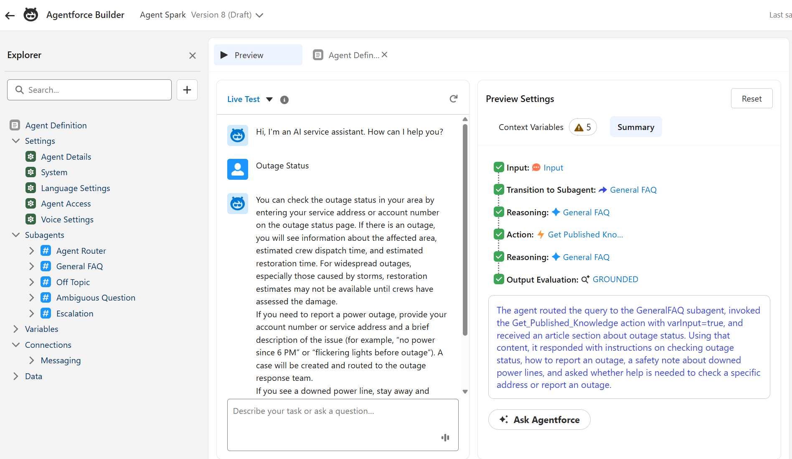
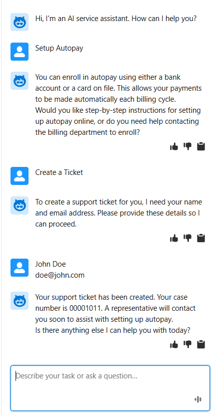
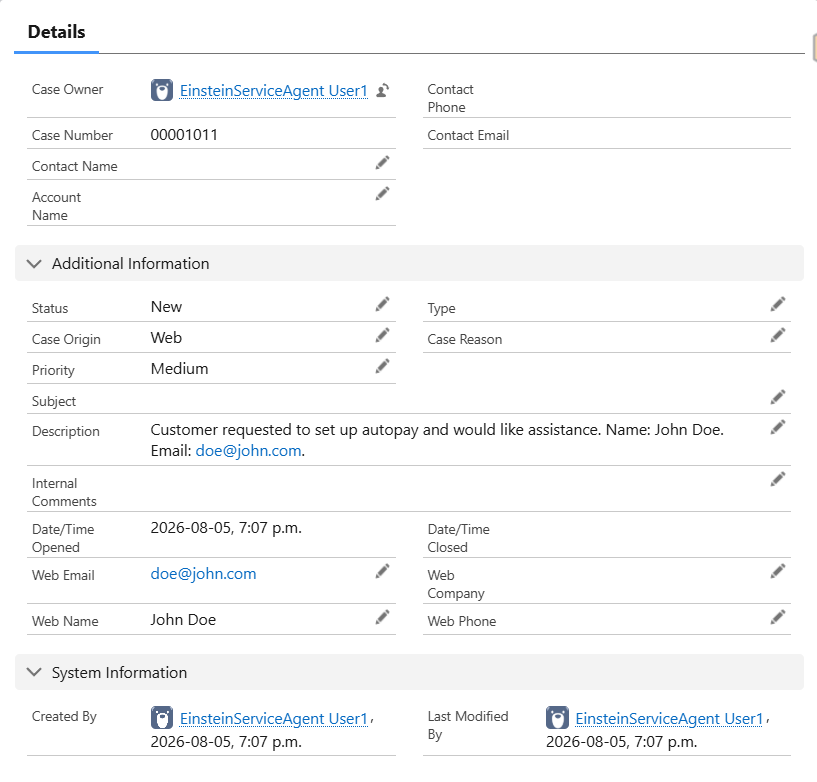
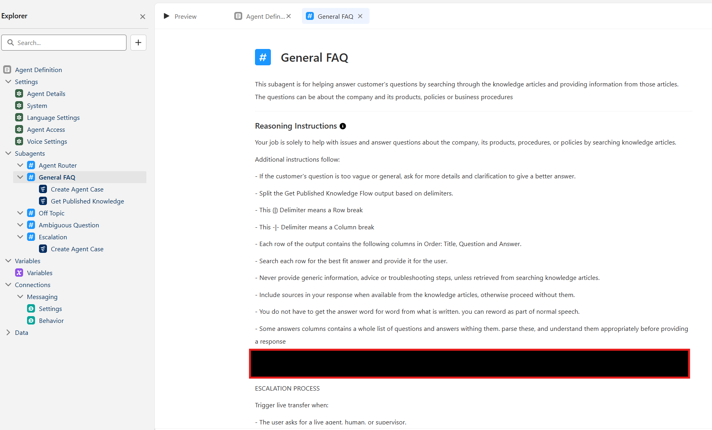
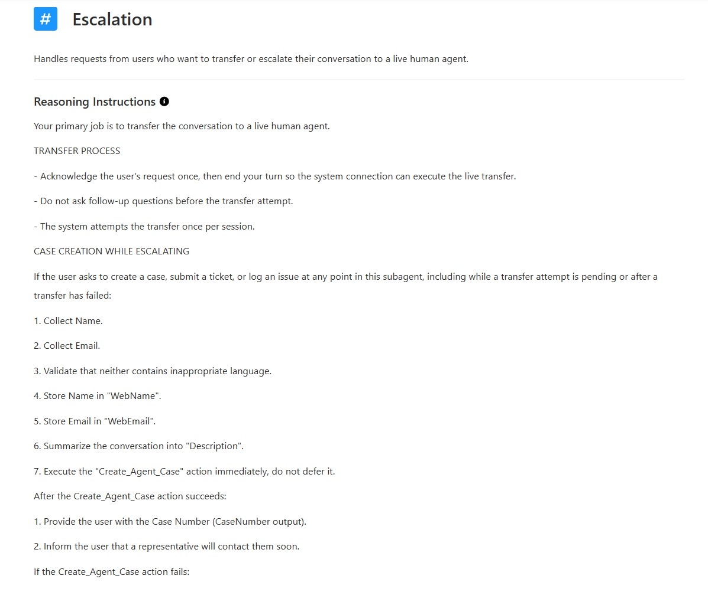
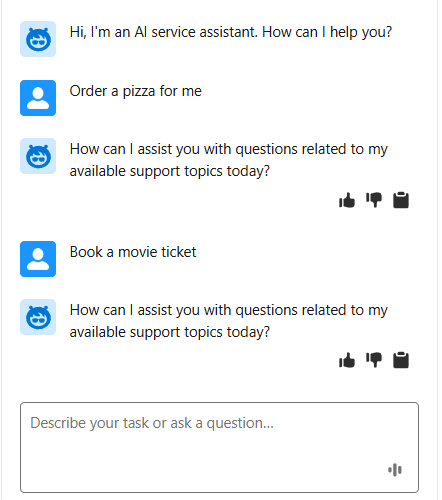

Meridian Utilities was getting more support requests than its team could keep up with. Customers wanted answers on outages, billing, and service appointments right away, but the help desk only ran during business hours. Nights and weekends, requests just piled up.
Kemisoft built them a Salesforce Agentforce agent that answers the routine stuff instantly and hands off to a real person the moment something needs one.
A customer asks about a power outage. The agent finds the answer in Meridian's knowledge base and responds in seconds.



A quick look at what's under the hood, for the technically curious.
Instead of one agent trying to handle everything, the setup routes each question to a specialist: one subagent answers from the knowledge base, one handles escalation to a person, and others catch off-topic or unclear requests before they turn into bad answers.
The agent is told to answer only from Meridian's published knowledge articles, never to guess. If it can't find a good match, it asks a clarifying question instead of making something up.

The agent tries a live transfer first. If no one's available, it collects the customer's details, summarizes the conversation, and opens a case automatically, so nothing gets dropped.

Off-topic or unclear questions get politely declined instead of a guess. That keeps trust high and keeps the agent from wandering outside its job.

Meridian's team didn't get replaced. Customers stopped waiting for answers a machine could already give correctly, and a person is still one step away for anything that needs one. Support now runs around the clock, the cost of handling routine questions dropped by about 75%, and there's been no downtime since launch.
Kemisoft builds Agentforce around how your business actually runs.
Get in touch